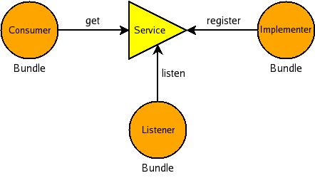

From Peter Kriens' blog on Bundle-Service Diagrams :
... use a circle for a bundle and a triangle for a service. The service can be used in 3 different ways by a bundle, and this needs to be depicted:
- Consumer - The bundle that gets the service is the consumer. The arrow from the bundle attaches to the horizontal or vertical line on a service triangle. An OSGi service can be consumed many times by any bundle. Many bundles can therefore connect to the horizontal or vertical line of the triangle.
- Implementer - The bundle that implements the service must register it. This is depicted by drawing a line to a corner of the triangle. An OSGi service can be registered many times by the same or different bundles.
- Listener - A listener bundle connects to one of the angled lines of the triangle. A listener is notified of registrations, modifications and unregistrations of the service. A service can have many listeners.
A service is identified by its interface.